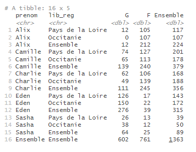
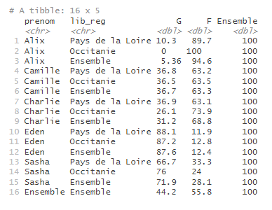

cc_calculer_profil_ligne_colonne.Rmdtab_pct() est une des fonctions de customisation du contenu d’un tableau proposée par le package tabloid.
Elle permet, lorsque la statistique calculée est un comptage (effectifs) ou une somme, de transformer le tableau en un pourcentage ligne ou colonne.
Elle prend en entrée un objet tab et retourne un autre objet tab transformé. Elle s’utilise forcément juste après une instruction tab_build(). Elle peut éventuellement être suivi des autres fonctions de customisation tab_round() ou tab_mask().
pct
Le paramètre pct peut prendre les valeurs suivantes :
Le tableau suivant donne le nombre de naissances en 2020, selon le sexe, pour chacun des cinq prénoms mixtes retenus dans les deux régions.
prenoms_mixtes |>
tab_build(var_rows = c(prenom, lib_reg),
var_cols = sexe,
var_stat = nombre,
stat = "sum")
Pour connaitre la répartition en pourcentage, on utilise la fonction tab_pct(), en précisant ‘pct = “row”’ pour indiquer que l’on souhaite des pourcentages en lignes
prenoms_mixtes |>
tab_build(var_rows = c(prenom, lib_reg),
var_cols = sexe,
var_stat = nombre,
stat = "sum") |>
tab_pct(pct = "row")
La fonction tab_pct() n’a de sens que lorsque les calculs portent sur des effectifs ou des sommes (éventuellement pondérés) - on ne peut donc l’utiliser que pour stat = “count”, “sum” ou “weighted_sum”.
Dans le cas des profils lignes ou colonnes, l’option guarantee_100 = TRUE de la fonction tab_round() est proposée si l’utilisateur a besoin d’assurer une cohérence d’arrondis (pour un nombre de décimales n donné). Cela est en général imposé par la charte éditoriale des publications de l’Insee. Pour plus d’informations sur cette option, se référer à l’article suivant : Gérer les arrondis d’un tableau croisé.